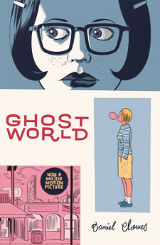
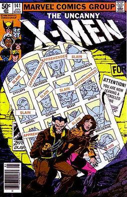
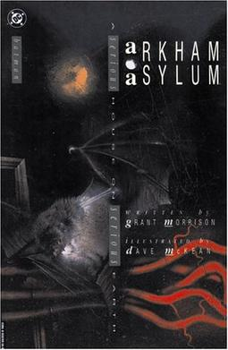

TOP COMIC BOOKS
 |
Batman: The Killing Joke is a 1988 DC Comics one-shot graphic novel featuring the characters Batman and the Joker written by Alan Moore and illustrated by Brian Bolland. The Killing Joke provides an origin story for the supervillain the Joker, loosely adapted from the 1951 story arc "The Man Behind the Red Hood!". The Joker's origin is presented via flashback, while simultaneously depicting his attempt to drive Jim Gordon insane and Batman's desperate attempt to stop him.
Created by : Alan Moore,
Brian Bolland,
John Higgins
|
Ghost World follows the day-to-day lives of best friends Enid Coleslaw and Rebecca Doppelmeyer, two cynical, pseudo-intellectual, and intermittently witty teenage girls recently graduated from high school in the early 1990s. They spend their days wandering aimlessly around their unnamed American town, criticizing popular culture and the people they encounter while wondering what they will do for the rest of their days.
Created by : Daniel Clowes |
 |
|  |
Days of Future Past is a storyline in the Marvel Comics comic book The Uncanny X-Men issues #141–142, published in 1981. It deals with a dystopian future in which mutants are incarcerated in internment camps. An adult Kate Pryde transfers her mind into her younger self, the present-day Kitty Pryde, who brings the X-Men to prevent a fatal moment in history that triggers anti-mutant hysteria.
The storyline was produced during the franchise's rise to popularity under the writer/artist team of Chris Claremont, John Byrne and Terry Austin. The dark future seen in the story has been revisited numerous times, and was the basis for the 2014 similarly-titled feature film X-Men: Days of Future Past, wherein Wolverine is sent back in time. In 2001, fans voted the first issue of this storyline the 25th greatest Marvel comic.
created By : Chris Claremont,John Byrne |
Blankets is an autobiographical graphic novel by Craig Thompson, published in 2003 by Top Shelf Productions. As a coming-of-age autobiography, the book tells the story of Thompson's childhood in an Evangelical Christian family, his first love, and his early adulthood. The book was widely acclaimed, with Time magazine ranking it #1 in its 2003 Best Comics list, and #8 in its Best Comics of the Decade.
Created By : Craig Thompson |
 |
|  |
Arkham Asylum: A Serious House on Serious Earth (often shortened to Batman: Arkham Asylum) is a Batman graphic novel written by Grant Morrison and illustrated by Dave McKean. The graphic novel was the first Batman story to be written by Morrison before becoming a regular writer in future Batman titles. Inspired by previous works like The Dark Knight Returns, Morrison conceived the story to be their own different approach to the character, using heavy symbolical references and the deconstruction of many iconic Batman villains. The story follows the vigilante Batman, who is called upon to quell a maddening riot taking place in the infamous Arkham Asylum, a psychiatric hospital housing the most dangerous supervillains in Gotham City. Inside, Batman confronts many of his enduring rogues gallery, such as the Joker, Two-Face, and Killer Croc, many of them having changed since he last saw them. As Batman ventures deeper, he discovers the origin of how the asylum was established, the history of its builder Amadeus Arkham, and the supernatural and psychological mystery that has been haunting the area.
Created by : Grant Morrison,Dave McKean |